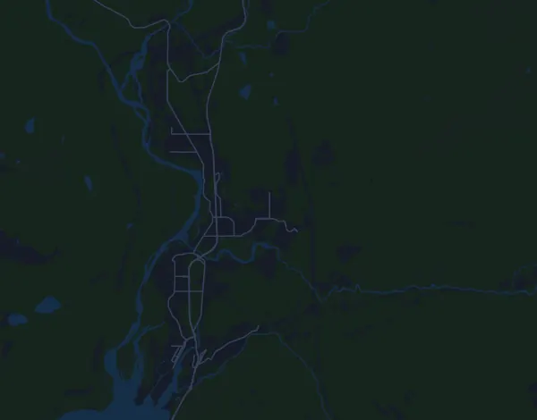

Squamish 50 – 50 mile 78,5 km
- Distanz
- 78,5 km
- Höhenmeter
- ↑ 2.621 m
- Höchster Punkt
- 994 m ü. M.
- Untergrund
- Trail und Gelände
- Profil
- Sehr hügelig
- Verpflegungsstellen
- 8
Höhenprofil
Mit Mila vorbereiten
Mila ist eine Lauf-Coach-App. Nimmst du einen Lauf in deinen Plan auf, plant der Coach deine Wochen bis zum Start nach deiner Form und gibt dir eine Zielzeitprognose und einen Plan für Tempo, Getränke und Verpflegung auf der Strecke.

Der richtige Lauf am richtigen Tag.
Die Strecke

Über die Strecke
Squamish 50 – 50 mile ist ein Traillauf in Squamish, Kanada, über 78,5 km. Die Strecke hat insgesamt 2.621 Höhenmeter bergauf und 2.620 bergab, 33 m pro km, und ist damit sehr hügelig. Der höchste Punkt liegt auf 994 m ü. M., der tiefste auf -2 m.
Der größte Anstieg beginnt bei km 38,0: 619 Höhenmeter auf 5,1 km mit durchschnittlich 12,1 % Steigung, bis auf 994 m. Insgesamt hat die Strecke 11 Anstiege ab 25 Höhenmetern; der letzte beginnt bei km 72,7.
Der Veranstalter nennt 8 Verpflegungsstellen, die erste bei km 10,5 und die letzte bei km 69,0.
In der Mila-App beschreibt der Coach die Strecke ausführlich in deiner Sprache und plant dein Pacing und deine Verpflegung dafür.
Anstiege
| Beginnt bei | Länge | Höhenmeter | Steigung | Gipfel (m ü. M.) |
|---|---|---|---|---|
| km 9,9 | 7,3 km | 438 m | 6,0 % | 459 |
| km 19,2 | 6,9 km | 303 m | 4,4 % | 492 |
| km 29,3 | 2,9 km | 95 m | 3,2 % | 382 |
| km 33,4 | 4 km | 192 m | 4,8 % | 395 |
| km 38,0 | 5,1 km | 619 m | 12,1 % | 994 |
| km 51,1 | 7,7 km | 454 m | 5,9 % | 597 |
| km 61,3 | 860 m | 26 m | 3,0 % | 311 |
| km 62,7 | 2,2 km | 114 m | 5,1 % | 389 |
| km 67,3 | 2,1 km | 120 m | 5,7 % | 214 |
| km 71,3 | 770 m | 49 m | 6,4 % | 191 |
| km 72,7 | 1,6 km | 93 m | 5,7 % | 218 |
Vor dem Start
Verpflegungsstellen
| Bei | Angebot |
|---|---|
| km 10,5 | Wasser, Sportgetränk, Gels, Essen, Salz |
| km 20,0 | Wasser, Sportgetränk, Gels, Essen, Salz |
| km 27,5 | Wasser, Sportgetränk, Gels, Essen, Salz |
| km 36,0 | Wasser, Sportgetränk, Gels, Essen, Salz |
| km 47,5 | Wasser, Sportgetränk, Gels, Essen, Salz |
| km 52,0 | Wasser, Sportgetränk, Gels, Essen, Salz |
| km 61,5 | Wasser, Sportgetränk, Gels, Essen, Salz |
| km 69,0 | Wasser, Sportgetränk, Gels, Essen, Salz |
Quelle: squamish50.com, abgerufen am 15. Oktober 2026
Häufige Fragen
Wann findet Squamish 50 – 50 mile 78,5 km statt?
Das Datum der nächsten Ausgabe steht noch nicht fest. Zuletzt fand der Lauf am 15. August 2026 statt.
Wie lang ist Squamish 50 – 50 mile 78,5 km und wie viele Höhenmeter hat die Strecke?
Der Lauf ist 78,5 km lang mit 2.621 Höhenmetern bergauf und 2.620 bergab. Der höchste Punkt liegt auf 994 m ü. M.
Wie ist die Strecke von Squamish 50 – 50 mile 78,5 km?
Die Strecke ist sehr hügelig, mit durchschnittlich 33 Höhenmetern pro km. Sie hat 11 Anstiege ab 25 Höhenmetern; der größte beginnt bei km 38,0: 619 Höhenmeter auf 5,1 km. Start und Ziel liegen am selben Ort. Der Untergrund ist Trail und Gelände.
Gibt es Verpflegungsstellen bei Squamish 50 – 50 mile 78,5 km?
Ja. Der Veranstalter nennt 8 Verpflegungsstellen: km 10,5 (Wasser, Sportgetränk, Gels, Essen, Salz); km 20,0 (Wasser, Sportgetränk, Gels, Essen, Salz); km 27,5 (Wasser, Sportgetränk, Gels, Essen, Salz); km 36,0 (Wasser, Sportgetränk, Gels, Essen, Salz); km 47,5 (Wasser, Sportgetränk, Gels, Essen, Salz); km 52,0 (Wasser, Sportgetränk, Gels, Essen, Salz); km 61,5 (Wasser, Sportgetränk, Gels, Essen, Salz); km 69,0 (Wasser, Sportgetränk, Gels, Essen, Salz).
Wie teile ich mir Squamish 50 – 50 mile 78,5 km ein?
Lauf eher mit gleichmäßiger Anstrengung als mit gleichmäßigem Tempo: Lass das Tempo an den Anstiegen sinken, hol es zurück, wo es flacher wird, und halte dich auf den ersten Kilometern zurück. Die größten Anstiege beginnen bei km 9,9, km 19,2, km 38,0 und km 51,1. In Mila bekommst du einen Pace-Plan für genau diese Strecke, passend zu deiner Form.
Ähnliche Läufe
Weitere Läufe in der Nähe
- BMO Vancouver Marathon 42,2 km2. Mai 2027 · Vancouver, Kanada
- Marathon Beneva de Montréal – Marathon 42,2 km19. September 2027 · Montréal, Kanada
- Sinister 7 Ultra – 100-Miler 161 km10. Juli 2027 · Crowsnest Pass (Blairmore), AB, Kanada
- Tamarack Homes Ottawa International Marathon 42,2 km30. Mai 2027 · Ottawa, Kanada
- Toronto Waterfront Marathon – Marathon 42,2 km18. Oktober 2026 · Toronto, Kanada
Mit Mila vorbereiten
Der richtige Lauf am richtigen Tag.
Die Angaben stammen aus der Streckendatei und den Informationen des Veranstalters. Prüfe Datum, Startzeiten und Regeln beim Veranstalter.
Mila ist nicht mit dem Veranstalter oder den Sponsoren des Laufs verbunden und wird von ihnen weder gesponsert noch empfohlen. Namen und Marken gehören ihren Inhabern. Veranstalter oder Rechteinhaber? Änderung oder Entfernung beantragen